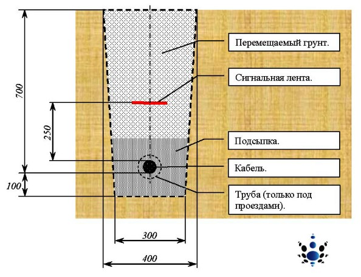

Качественный электромонтаж в Санкт-Петербурге и ленобласти, стаж 12 лет. Частный электрик, недорого и качественно.
Тел. 8 904 642 08 57 Николай.

Прокладка кабеля в земле от частного электрика.
Прокладка кабеля в земле - информация, которую необходимо знать.
Существуют два способа прокладки электрических кабельных сетей:
- воздушный и под поверхностью (землей/водой).

От профессионально составленного проекта прокладки электрического кабеля зависит надежность, срок службы и качество функционирования/эксплуатации электросистемы, и как следствие общие материальные затраты при производстве монтажных работ. На общие затраты проекта влияет не только стоимость расходных материалов, но качество грунта, в который надо укладывать кабель.
Перед началом земляных работ владелец проекта должен получить письменное разрешение на проведения данных изысканий от организации, по чьей территории пройдет магистраль и поставщика электроэнергии. К разрешению прикладывается схема (план) проведения работ с техническими показателями: глубина залегания кабеля, наличие каких либо коммуникаций.
Прокладка кабеля в земле регламентируется Правилами устройства электроустановок.
У руководителя монтажных работ должны быть следующие документы:
- Ордер на проведения технических работ;
- Копия разрешений организации, на чьей территории ведутся работы и поставщика электроэнергии;
- Вся остальная рабочая документация;
При обнаружении любых коммуникаций, не указанных в схеме производства работ, следует немедленно прекратить всю деятельность и проинформировать соответствующую организацию.
Грамотный человек знает, что любые монтажные работы регламентируются правилами, инструкциями, и не имеет значение, сложные это работы или самые простые.
Прокладка кабеля в земле что требуют Правила устройства электроустановок.
- Для кабельных линий, которые прокладываются в земле или воде, должны использоваться только бронированные кабели. Металлические оболочки данных кабелей должны быть защищены от химического воздействия;
- Кабели и провода должны использоваться лишь в областях/средах, которые указаны в технических условиях на кабеле;
- Для укладки кабеля должна быть вырыта траншея глубиной до 1 м, в зависимости от подаваемого напряжения, грунта и условий проведения монтажных работ;
- На дно траншеи насыпается песок или просеянный грунт. Затем монтируется защитная среда раньше это была кирпичная кладка, а сейчас кабель укрывают специальной защитной сигнальной лентой. Укладка данной ленты, присыпка ее землей должны производиться в присутствии представителя владельца электрических сетей и монтажной организации. Не разрешается применение сигнальных лент в местах пересечения прокладываемой линии с инженерными коммуникациями;
Прокладка кабеля в земле очередность проведения монтажных и регламентных работ.
- Профессиональное определение маршрута трассы, согласование его во всех инстанциях;
- Разметка прокладываемой трассы на местности;
- Рытье траншеи;
- Обустройство «подушки» из просеянного грунта или песка
- Транспортировка кабеля на место монтажных работ и его монтаж, на основании проекта (если предусмотрены для защиты трубы, протяжка кабеля в трубах);
- Монтаж соединительных муфт;
- Засыпка кабеля мелким грунтом или песком;
- Обустройство защиты для кабеля (когда она предусмотрена проектом) кирпичом или асбоцементными плитами;
- Составление акта скрытых работ;
- Испытания кабельной линии. В случае положительного результата засыпка траншеи землей;
Соблюдение вышеописанного порядка производимых монтажных работ строго обязательно.
Современная кабельная продукция стоит дорого и ее стоимость зависит от технических характеристик изделия. Продавцы электротехнической продукции заинтересованы в том. Чтобы реализовать более дорогой товар. Поэтому, во время консультаций клиентов по рабочим характеристикам изделий они пытаются «впихнуть» более, дорогой кабель, хотя, для стабильной и качественной работы электрической системы можно купить изделие более дешевое.
Чтобы не попасть на удочку недобросовестных продавцов необходимо выбирать кабельную продукцию вместе с профессиональным электриком, который легко просчитает необходимые рабочие характеристики, с запасом, для электросети.
Советы электрика профессионала нужны для анализа маршрута кабельной системы, состояния грунта и анализа других нюансов проведения монтажных работ.
Например, если на участке часто, где должны производиться монтажные работы, происходят оползни или другие подвижки грунта, прокладка кабеля в земле вообще не осуществляется.
Любую проблему проще предотвратить, чем устранять ее последствия аксиома, которую могут подтвердить миллионы людей.
Поэтому, при планировании совершить монтаж кабельных сетей, не экономьте на профессиональных электриках себе дороже.
Потому что, любое дело проще с самого начала сделать «по уму», чем потом его переделывать в силу непродуманности поступков.
 Поменять проводку в квартире.
Поменять проводку в квартире. Сколько будут стоить материалы.
Электрика в загородном доме стоимость работ.

Замена электропроводки в панельном доме.
Расценки на электропроводку квартир.
Замена проводки в хрущевке.
Электромонтаж в частном доме.
Электрика в загородном доме.
Сколько стоит замена электропроводки в двухкомнатной квартире?.
Электрик в новостройку однокомнатная квартира недорого.

Сколько стоит поменять электропроводку в 3-х комнатной квартире.